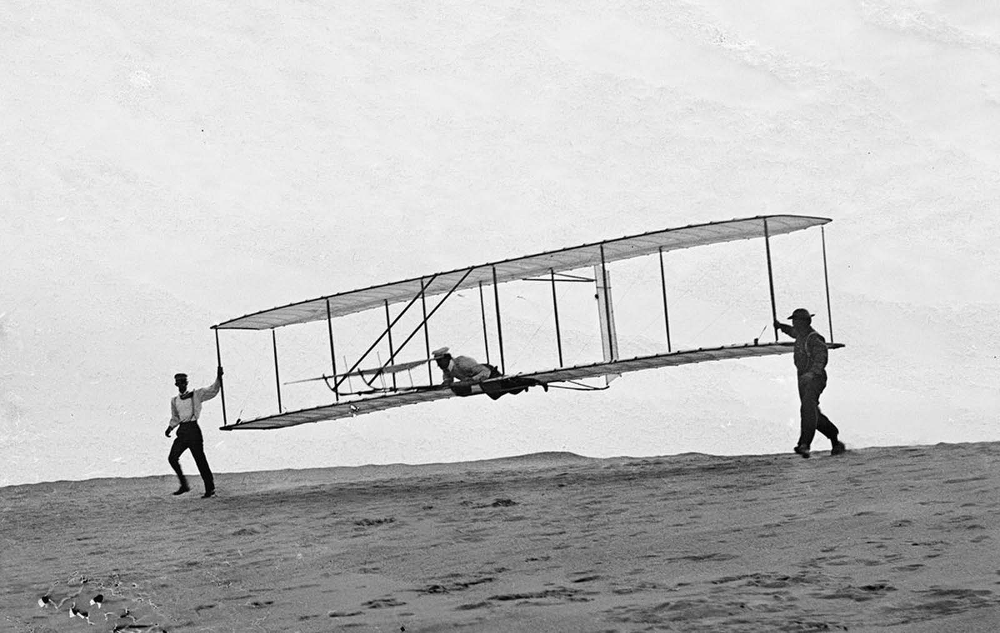
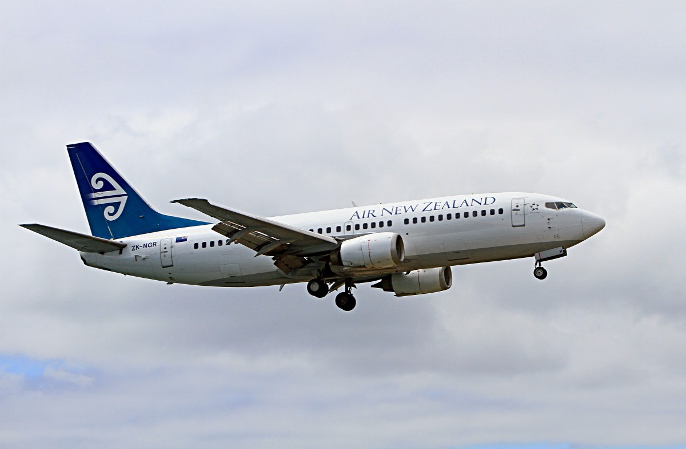
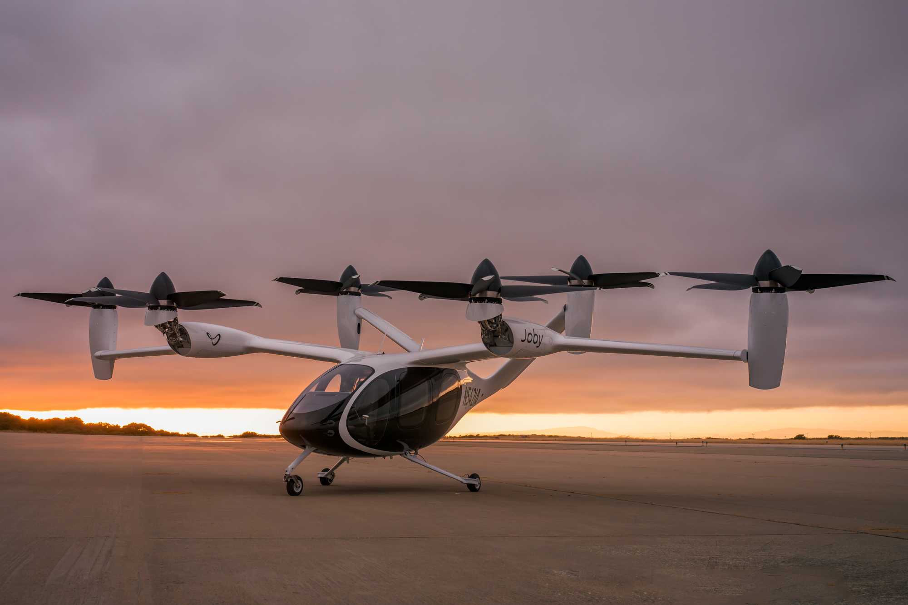

Welcome to the Aerospace Academy
At the Aerospace Academy, we explore the rich history, dynamic present, and promising future of aerospace education and innovation. Founded on a passion for flight and exploration, the Academy has been a hub for pioneering minds who strive to push the boundaries of human ingenuity. From our early days, when aviation was in its infancy, to the cutting-edge advancements of today, the Aerospace Academy has been at the forefront of shaping the next generation of aerospace engineers, pilots, and scientists.
As we look to the future, we remain committed to fostering an environment where curiosity meets innovation. Our vision is to equip students and professionals with the knowledge, skills, and hands-on experience to take flight in the rapidly evolving aerospace industry. Whether it's exploring the vastness of space or advancing sustainable air travel, the Aerospace Academy is dedicated to preparing individuals for the challenges and opportunities that lie ahead in this ever-changing field.
Join us on a journey through the past, present, and future of aerospace—where history is made, innovation thrives, and tomorrow's breakthroughs take flight.

(RHP, 2017)
History
First Flight
The Wright Brothers, Orville and Wilbur Wright, are pioneers of the aerospace industry. They are credited with inventing, building, and successfully flying the first powered, controlled, and sustained airplane on December 17, 1903, at Kitty Hawk, North Carolina. This momentous flight lasted 12 seconds and covered 120 feet, revolutionizing human transportation and setting the stage for modern aviation.
Following their first flight, the Wright Brothers spent several years refining their design. In 1905, they achieved the first practical airplane, capable of staying in the air for more than 30 minutes. Their relentless innovation laid the groundwork for the future of aerospace and aviation technology.
(Wright-house.com, 2024)
Current Aerospace Industry
1. Commercial Aviation
Commercial aviation is the backbone of the aerospace industry, enabling global connectivity and trade. Over 4.5 billion passengers travel annually, supported by advancements in efficiency and safety.

(pxhere.com, n.d.)
Eco-Friendly Advances: Modern aircraft engines like Pratt & Whitney's geared turbofan are more fuel-efficient, and sustainable aviation fuels (SAFs) can reduce carbon emissions by up to 80%. Additionally, prototypes of hybrid and electric aircraft by Airbus and Boeing are under development.
Automation: Artificial intelligence is revolutionizing aviation with smart routing, predictive maintenance, and air traffic control improvements.
2. Space Exploration and Commercialization
Space is becoming an economic frontier. Reusable rockets, pioneered by SpaceX’s Falcon 9, have reduced the cost of space launches, enabling frequent missions. Civilian space travel is now a reality, with companies like Blue Origin, Virgin Galactic, and SpaceX offering flights.
Future Missions: NASA’s Artemis program aims to return humans to the Moon, while SpaceX is actively planning Mars colonization.
3. Urban Air Mobility (UAM)
Urban Air Mobility (UAM) is an emerging field focused on electric vertical take-off and landing (eVTOL) vehicles. Companies such as Joby Aviation and Lilium are developing air taxis to reduce urban congestion. These vehicles are quieter and more sustainable than helicopters, using electric power.

(Joby Aviation, 2024)
4. Defense and Security
Defense aerospace is evolving with the increased use of unmanned aerial vehicles (UAVs) for reconnaissance and combat. Investments in hypersonic weapons and aircraft capable of speeds exceeding Mach 5 are shaping future military strategies.
Future Aerospace Industry
1. Sustainability and Green Aviation
Environmental concerns are driving significant innovation in aviation. Hydrogen-powered aircraft, like Airbus’s ZEROe concept, aim to achieve zero-emission flights by 2035. Companies like Wright Electric are working on fully electric planes for short-haul flights.
Airlines are also adopting carbon offset programs to mitigate their environmental impact.
2. Supersonic and Hypersonic Travel
Supersonic and hypersonic aircraft are poised to revolutionize air travel. Companies like Boom Supersonic are reviving commercial supersonic jets, aiming to reduce transatlantic flight times to under 3 hours. Hypersonic aircraft, capable of speeds exceeding Mach 5, are under development for both military and commercial purposes.
3. Space Colonization
Space colonization is moving closer to reality. NASA and its international partners plan to establish lunar bases as stepping stones to Mars. SpaceX’s Starship aims to transport humans to Mars by the 2030s, addressing challenges like radiation shielding and life-support systems.
Asteroid mining could fuel the space economy by providing access to rare metals and water.
4. Deep Space Exploration
New propulsion technologies are enabling humanity to reach farther into space. Concepts like nuclear propulsion will support interstellar missions. NASA’s Breakthrough Starshot aims to send probes to other star systems, such as Alpha Centauri.
5. Autonomous Flight and AI
Autonomous aircraft and AI pilots are transforming aviation. Fully autonomous planes for cargo and passenger transport are being developed by Boeing and Airbus. AI copilots like Xwing’s Superpilot enhance safety and efficiency.
6. Global Connectivity
Satellite constellations, such as SpaceX’s Starlink and Amazon’s Kuiper, are bringing high-speed internet to remote areas, fostering global connectivity and bridging digital divides.

Follow Us on Social Media